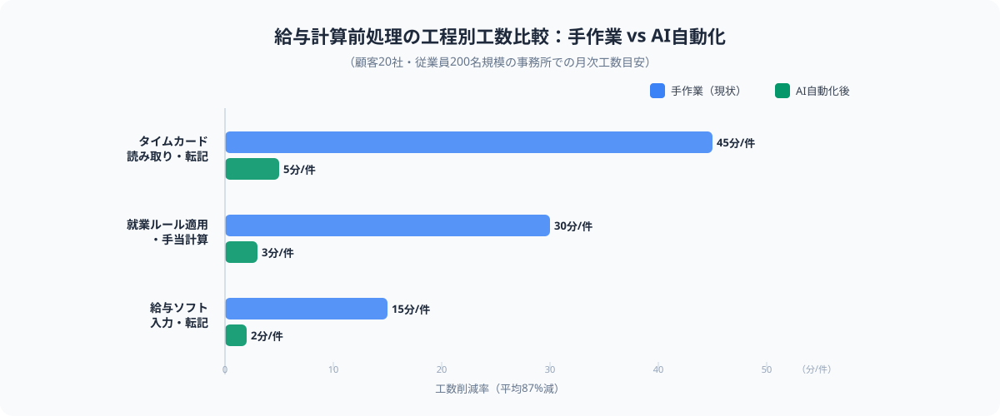
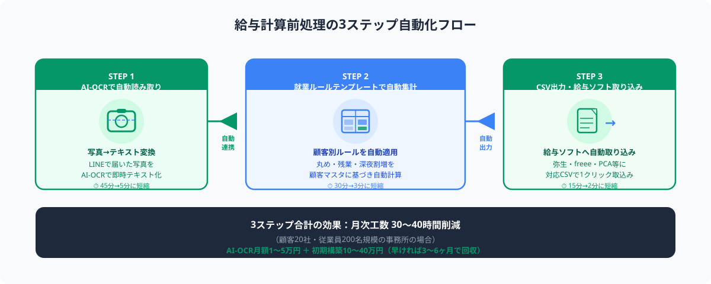

給与計算の前処理が属人化・非効率になりやすい理由
勤怠データ（出退勤記録）から実働時間・残業時間・各種手当金額を算出し、給与計算ソフトへ投入できる形に整えるまでの一連の作業。紙タイムカードの読み取り・目視確認・就業ルール適用・手入力などが含まれ、給与ソフト上での計算本体よりも前処理のほうが時間を要するケースが多い。
士業事務所が給与計算代行業務で最も非効率を感じるのは、計算そのものではなく「給与ソフトに入力できる状態にするまでの前処理」です。この前処理が非効率になる背景には、以下の構造的な問題があります。
- 勤怠管理方法が顧客ごとにバラバラ：ICカード打刻型・紙のタイムカード・LINEで写真送付・Excelシート・POSレジ連動など、顧客によって勤怠データの形式が完全に異なる。事務所側で形式を統一できないため、顧客ごとに異なる受け取り方・処理方法を維持するしかない
- 紙タイムカードのデジタル化が手作業：顧客からLINEで送られてきた写真を印刷し、担当者が1行ずつ出退勤時刻を読み取って別のシートに転記する。字が読みにくい・日付が抜けているといった記入ミスの確認も手作業で行う
- 就業ルールが顧客ごとに細かく異なる：1時間単位で丸める顧客・15分単位で丸める顧客・30分未満切り捨て・切り上げなど、ルールのパターンが顧客数だけ存在する。「この顧客の場合は特殊な計算がある」という知識が担当者の頭の中にしかない
- 給与ソフトへの手入力が最終工程：集計が終わっても給与ソフトへの入力は手動。弥生給与・freee人事労務・PCA給与など顧客ごとに使用ソフトが異なり、各ソフトの入力画面に合わせて値を転記する必要がある
この構造の結果として、「担当者が変わると前任者にしか分からない顧客ルールが大量にあって引き継げない」「月末の2〜3日間は残業が避けられない」という状況が続きます。AIによる自動化が有効なのは、この前処理の3つの工程（読み取り・集計・出力）それぞれにAIツールを当てることで、担当者の手作業を断片的にではなく一気通貫で削減できる点です。

AI-OCR＋自動集計でタイムカード処理を3ステップ化する
ステップ1｜AI-OCRでタイムカード写真を自動読み取りする
最初のステップは、紙タイムカードの写真から出退勤時刻・氏名・日付をAI-OCRで自動テキスト化することです。近年のAI-OCRは手書き文字・かすれた印字・傾いた写真にも対応できるレベルに達しており、紙タイムカードの読み取り精度は90〜98%程度まで向上しています。
AI-OCRでできる主な処理
- LINEやメールで受け取った写真をそのまま処理：専用スキャナー不要。顧客がいつも通りスマホ写真をLINEで送るだけで、事務所側がその画像ファイルをAI-OCRに読み込ませる。専用アプリの操作が要らない顧客にとってもハードルがない
- 出退勤時刻の自動抽出：タイムカードの印字フォーマット（AM/PM表記・24時間表記・列配置）を学習させることで、日付・出勤時刻・退勤時刻・休憩時間を自動で列に分解してスプレッドシートへ出力する
- 記入漏れ・読み取り失敗箇所のフラグ立て：読み取れなかった項目・信頼度が低い項目を自動でハイライトし、担当者に確認を求める仕組みが標準で入っているサービスが多い。全体の10〜30%が確認対象になることがあるが、全件手作業よりも大幅に効率化できる
- 顧客別のタイムカードフォーマット登録：顧客ごとに異なるタイムカードの書式をあらかじめ登録しておけば、自動でフォーマットを判定して処理する。初回設定後は追加の操作なし
OneOCR（NTT Communications）：API提供・精度高・日本語手書きに強い。月額費用は読み取り枚数によるAPI従量課金。士業向けのテンプレート事例あり。
Google Document AI：Googleアカウントがあれば利用開始しやすい。スプレッドシートとの連携がシンプル。英語UIだが操作は難しくない。月1,000ページまで無料枠あり。
SmartOCR（DSK）：勤務表・タイムカード専用テンプレートを提供しており、初期設定の手間が少ない。月額2〜5万円の定額プランあり。
ABBYY FlexiCapture：複雑なレイアウトにも対応できる高精度OCR。大規模処理向きでコストは高め。処理件数が多い（月1,000件超）事務所向け。
このステップの導入後の効果目安として、1件あたりのタイムカード読み取り・転記時間が40〜50分から5〜8分程度に短縮されます。顧客20社分の場合、月次で約13〜15時間の工数削減が見込めます。初期設定（顧客別フォーマット登録）には3〜5時間ほどかかりますが、2ヶ月目以降は定常運用に入れます。
ステップ2｜顧客別の就業ルールテンプレートで自動集計する
AI-OCRで読み取ったデータをそのまま給与ソフトに入れることはできません。顧客ごとに決まった就業ルール（時間の丸め方・残業開始時刻・深夜割増の計算方法・有給消化の反映タイミング等）を適用して、実働時間・残業時間・各手当金額を算出する「自動集計」の仕組みが必要です。
就業ルール自動集計で設定する主な項目
- 時間丸め設定：出勤時刻は「切り上げ」か「切り捨て」か、単位は「1分・15分・30分・1時間」のどれかを顧客別に設定。例えば「9:07出勤の場合、9:00に切り上げ（顧客A）」「9:15に切り上げ（顧客B）」を顧客マスタとして管理する
- 残業時間の算出ルール：所定労働時間（8時間・7.5時間等）と残業開始時刻の定義が顧客ごとに異なる。「18時以降を残業」とする顧客もあれば「日またぎの翌日に振替」するルールの顧客もあり、それぞれの計算式をテンプレートに組み込む
- 深夜・休日割増の自動計算：22時〜5時の深夜時間帯・法定休日・所定休日・振替出勤の各ケースについて、割増率（1.25倍・1.35倍・1.6倍等）を顧客別に設定し、実働時間に乗じて手当金額を自動算出する
- 遅刻・早退・有給の控除計算：遅刻・早退の控除単位（1分単位・15分単位）と有給消化時の時間計上方法を設定する。「遅刻は1分単位で控除するが有給は1日単位のみ取得可」などの複合ルールも設定できる
- 顧客マスタの一元管理：上記の設定を顧客ごとに一覧化した「顧客別就業ルールマスタ」を作成・保存する。担当者が変わっても設定が引き継がれ、「この顧客のルールを知っているのはAさんだけ」という属人化が解消される
① スプレッドシート関数＋マクロ（低コスト・担当者が保守しやすい）
Googleスプレッドシートまたはエクセルで、IFS関数・ROUNDUP関数・TEXT関数等を組み合わせて計算ロジックを実装。顧客マスタシートと連携させることで顧客別のルールを自動参照する。顧客数が20〜30社以下・ルールが比較的シンプルな事務所に向いている。
② Power Automate Desktop（中規模以上・全自動化を目指す場合）
AI-OCRの読み取り→スプレッドシートへの転記→集計計算→CSV出力→給与ソフトへの取り込みまでをPower Automate Desktopのフロー1本で繋ぐ。人の操作が一切不要な「完全自動化」を実現できる。Microsoft 365に含まれるため追加ライセンスコストゼロで利用可能な事務所も多い。
このステップ完了後の効果目安として、就業ルール適用・手当計算の時間が1件あたり25〜30分から2〜3分に短縮されます。自動集計テンプレートの初期構築には、スプレッドシート方式で顧客10社分の設定に3〜5日程度（技術者でなくても構築可能）かかります。Power Automate Desktop方式はより高度なフロー設計が必要なため、慣れていない場合は外部のエンジニアにスポット外注で依頼するのが確実です。

ステップ3｜既存給与ソフト対応のCSV形式で出力する
自動集計が完了したら、顧客が使用している給与ソフトの取り込み形式に合わせてCSVファイルを出力し、給与ソフトへインポートします。給与ソフトへの手入力をこのステップで完全になくすことができます。
CSV出力・取り込みの実装ポイント
- 顧客別の給与ソフト対応フォーマットを作成する：弥生給与・freee人事労務・PCA給与・マネーフォワード給与などは、インポート用のCSVフォーマットが各社ごとに決まっている。あらかじめ各ソフトのフォーマット定義をダウンロードし、自動集計結果をそのフォーマットに変換するスプレッドシートテンプレートを作成しておく
- 1クリックで出力できる仕組みを作る：スプレッドシートのマクロを使えば「CSVエクスポートボタン」を作成し、担当者がボタンを押すだけで正しいフォーマットのCSVが保存される状態にできる。毎月フォーマットを調整する手間をゼロにする
- 金額チェックを自動化する：CSV出力前に「支給総額の前月比較」「残業時間が一定閾値を超えた従業員のハイライト」など、チェック項目を自動で実行するルールを組み込む。ダブルチェックの工数も削減できる
- 取り込み後の確認ポイントを最小化する：給与ソフトへのインポート後に担当者が確認すべき項目を「前月と大きく変動した従業員の明細のみ」に絞る手順書を作成する。全件確認から差分確認へのシフトで、最終チェックの時間を大幅に短縮できる
このステップ完了後の効果目安として、給与ソフトへの入力・転記時間が1件あたり10〜15分からほぼゼロ（取り込み操作のみ1〜2分）に短縮されます。3ステップすべてを通じた効率化効果として、顧客20社・従業員総数200名規模の事務所であれば、月次で30〜40時間程度の工数削減が実現できます。
ツール選定と導入コストの目安（2026年）
給与計算前処理の自動化を実現するにあたって、どのツールをどう組み合わせるかによって導入コストと難易度が変わります。以下は2026年時点の費用目安です。
① ライト構成（AI-OCR＋スプレッドシート手動フォーマット変換）
月額コスト：AI-OCRサービス月1〜3万円程度（処理枚数による）
初期設定期間：1〜2週間（担当者が設定できる）
向いている事務所：顧客数10〜20社・給与ソフトが2〜3種類に絞られている
② スタンダード構成（AI-OCR＋スプレッドシート自動集計マクロ＋CSV出力ボタン）
月額コスト：AI-OCRサービス月2〜5万円程度＋マクロ構築費（初回のみ10〜20万円スポット外注）
初期設定期間：3〜4週間
向いている事務所：顧客数20〜50社・就業ルールのパターンが多様・担当者の入れ替えが多い
③ フル自動化構成（AI-OCR＋Power Automate Desktopで全工程一気通貫）
月額コスト：Microsoft 365ライセンスのみ（既存ライセンスがあれば追加コストほぼゼロ）＋フロー構築費（初回のみ20〜40万円スポット外注）
初期設定期間：4〜8週間
向いている事務所：顧客数50社以上・処理件数が多く月末集中を解消したい・Microsoft 365環境あり
スポット外注で依頼する場合、ライト〜スタンダード構成のマクロ構築・フォーマットテンプレート作成は、スプレッドシートに詳しいエンジニアへの1〜2日依頼（5〜15万円）で対応できます。フル自動化のPower Automateフロー設計は5〜15日（20〜40万円）が目安です。ANKENではこうした「1機能だけの改修・構築」をスポット単発で依頼できるエンジニアを紹介しています。
導入時のよくある失敗と対策
AI-OCRによる給与計算前処理の自動化を進める際、次の3つの落とし穴に注意が必要です。
-
失敗①：AI-OCRの精度を過信して確認ゼロにする
AI-OCRの読み取り精度は高くなりましたが、手書きの崩し字・タイムカードの汚れ・写真の傾きによって誤読は発生します。「完全自動化だから確認不要」という運用に切り替えると、誤った数値が給与に反映されるリスクがあります。
対策：信頼度が低い項目（OCRが「?」フラグを立てた箇所）だけを担当者が確認する「差分確認方式」を設計する。全件確認ではなく要確認箇所のみに絞ることで確認工数を最小化しながらミスを防ぐ。 -
失敗②：就業ルールマスタを口頭ベースで移行する
担当者の頭の中にある就業ルールを口頭でエンジニアに伝えてシステムに実装すると、「言い忘れがあった」「特例ケースが考慮されていなかった」というギャップが後から出てきます。
対策：自動集計テンプレートを構築する前に、顧客別就業ルール一覧表を担当者自身が記入する「ルール棚卸しシート」を作成する。実際に過去1年分の計算例（例外処理を含む）を洗い出してから実装に入ることで手戻りを防ぐ。 -
失敗③：ツールをひとつひとつ試してから決めようとして時間がかかる
AI-OCRサービスを3〜4種類比較検討しているうちに数ヶ月が経過し、結局「来月から始めよう」を繰り返すケースです。
対策：まず1種類のAI-OCRサービスで顧客3〜5社分を試験的に処理してみる。精度・操作感・コストの感触をつかんでから本導入に進む。比較検討よりも「小さく始めて改善する」ほうが実際の導入スピードが速くなる。
よくある質問
- Q. 顧客がタイムカードをデジタル化していなくてもAI-OCRは使えますか？
- A. 使えます。スマホで撮影した紙タイムカードの写真をLINEやメールで受け取り、その画像をAI-OCRで処理するだけなので顧客のデジタル化は不要です。
- Q. 就業ルールが顧客ごとに複雑すぎてスプレッドシートで対応できるか不安です。
- A. パターンが複雑な場合はPower Automate Desktopやkintoneのプラグインでロジックを実装できます。スポット外注エンジニアへ「ルール一覧表」を渡して依頼するのが最短です。
- Q. 導入後に就業ルールが変わった場合、誰が設定変更しますか？
- A. スプレッドシート方式であれば担当者自身が設定変更できます。最初から「変更しやすい設計」を意識して構築することが重要で、スポット外注依頼時にその旨を伝えてください。
まとめ
給与計算の下準備をAIで自動化するステップは、①AI-OCRでタイムカード写真を自動読み取り（手入力90%削減）→②顧客別就業ルールテンプレートで自動集計（計算工数90%削減）→③既存給与ソフト対応CSVで自動出力（転記工数ほぼゼロ）の3段階です。3ステップすべてを導入すれば、顧客20社・従業員200名規模の事務所で月30〜40時間の工数削減が実現できます。導入コストは構成によって月額1〜5万円＋初期構築費10〜40万円が目安であり、早ければ3〜6ヶ月で費用を回収できます。
「AI-OCRのサービス選定から始めたいが何が合うか分からない」「Power Automateで一気通貫の自動化を構築したいがエンジニアが社内にいない」という場合は、ANKENへの無料相談から費用感と進め方を確認できます。1機能だけのスポット依頼にも対応しています。まずはお気軽にご相談ください。